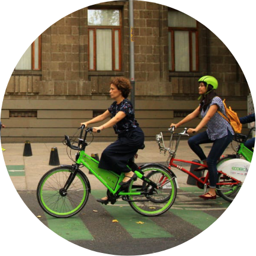

Why a campaign around cycling?
It’s resilient
The need for social distancing and changes to commuting and overall travel patterns as a result of the COVID-19 pandemic have caused cities to reshape, rethink, and renew their public spaces, streets, and public transit systems to focus more on people. The pandemic revealed inequities that have been present for decades. Shelter at home orders opened many peoples’ eyes to how few essential destinations—grocery stores or markets, hospitals, play spaces—they could actually reach by foot. Cycling effectively filled those gaps, and many cities quickly implemented temporary cycle lanes to support growing demand.
Momentum is growing
Cities around the world are on their way to becoming Cycling Cities by demonstrating how providing safe spaces to cycle generates more trips by bicycle. A Cycling City is one where everyone feels safe to cycle anywhere. That means cycling infrastructure is connected and safe. But it also means that supportive policies, like low speed limits and dedicated resources, are in place. In Cycling Cities, people choose to cycle because it is the most convenient option for most trips.
The benefits are clear
More people cycling means cleaner air; healthier communities; quieter streets; less traffic; more green space; and, above all, more freedom and connections to access people and destinations.
Recognizing the pivotal moment, ITDP launches the global Cycling Cities campaign to provide governments, planners, advocates, and others the tools to make cycling a safe and affordable transportation option in cities.
ITDP’s Cycling Cities campaign will lift up and unify ambitious cycling efforts, like temporary bicycle lanes and car-free streets implemented during the COVID-19 pandemic, to ensure more people choose cycling for more trips. We’re setting an ambitious goal to permanently redesign streets and adopt key policies to support cycling, so that 25 million more people live near safe cycle lanes by 2025. By 2025, we aim to influence 250 cities to design, adopt, and implement plans to become more cycle-friendly.
During the covid-19 pandemic, frontline workers and people who needed to make essential trips turned to bicycles. Cities responded quickly by installing temporary infrastructure and making more space for cycling and walking.
- Over 100 cities built more than 2,000 kilometers of temporary cycle lanes and other cycle-supportive infrastructure within weeks of the COVID-19 pandemic.
- Cities that added temporary cycling infrastructure during the COVID-19 pandemic saw 48% more cycling trips than cities that did not add cycle lanes.
- More than 45 cities offered free or reduced bikeshare to essential workers in the first weeks of lockdowns.
See ITDP India’s Post-Lockdown Guidelines to Create Cycle-friendly Cities for more.
In recent years, cities around the world have increasingly embraced bikeshare and other shared micromobility as alternatives to vehicles and extensions of the transportation system.
- Bikeshare has grown globally from 13 systems in 2004 to over 1,000 today.
- Access to shared bicycles in Chinese cities increased cycling mode share by up to 10%.
- Mexico City’s Ecobici bikeshare system has more than 300,000 users and supports 35,000 daily trips.
- Porto Alegre, Brazil’s BikePOA system saw a 60% increase in trips between 2018 and 2019.
Cities and countries in the Global South have been making progress on high-quality cycling infrastructure and supportive policies to become more cycle-friendly.
- Addis Ababa, Ethiopia, and Kigali, Rwanda have initiated car-free days to prioritize cycling and walking as a public health solution.
- Pune, India’s Comprehensive Bicycle Plan lays out 400 km of cycle lanes, and cycle tracks have been installed on major arterials including Jangli Maharaj (JM) Road.
- Jakarta, Indonesia is working to implement 500 km of cycle lanes; pop-up cycle lanes installed during the pandemic saw cyclist counts grow by up to 1000%.
Embedding funding for cycling in transport budgets will help build and maintain a safe, connected network of cycle lanes, which enable cycling to become the most convenient, affordable option for short trips.
- The UN calls for governments to dedicate 20% of their transport budget to active mobility.
- In Buenos Aires, dedicated funding for cycling has led to over 260km of cycle lanes, a free bikeshare system, and 4% of trips made by bicycle.
- In Taipei, dedicated funding for cycling supports a bikeshare system with over 7,000 bicycles, over 500km of connected cycle lanes, and more than 5% of trips made by bicycle.
See ITDP Africa’s Safe Streets for Walking and Cycling and The Bikeshare Planning Guide for more on how cycling improves community health.
See The Grow Cycling Toolkit for metrics and actions for increasing cycling in cities.
Cycling improves health and wellbeing–both for people who ride and for people in communities who benefit from cleaner air.
- 90% of people in cities are affected by air pollution. International frameworks like the UN’s New Urban Agenda and C40’s Clean Air Cities Declaration link an increase in cycling to improved air quality in cities.
- 60-80% of people worldwide do not meet recommended health activity levels, and physical inactivity is responsible for over 20% of cardiovascular disease. Regular cycling reduces risk of cardiovascular disease, and other conditions like anxiety, diabetes, and obesity.
- Motor vehicles are responsible for more than 50% of air pollutants in urban areas, contributing to respiratory, neurological, and cardiovascular diseases, including higher rates of asthma and cancer in children and adults.
When more people ride bicycles, everyone in the city is safer on the road–even those who never ride a bicycle.
- As more people walk and ride bicycles, the likelihood of being struck by a vehicle decreases, making streets safer overall.
- Intersections where cyclists and cycling infrastructure are present have a lower likelihood of crashes.
Cycling is flexible, affordable, and helps people meet their daily needs. Short trips are a luxury: In many cities, people walk long distances in unsafe, uncomfortable conditions due to a lack of options. Cycling is the “missing middle” between walking and public transit, and is time- and cost-effective, especially when trip-chaining.
- Cycling expands access to jobs, schools, and other destinations by 15 times compared to walking.
- Owning and using a bicycle costs 90% less than owning a motor vehicle.
- Low income households are twice as likely to rely on cycling for regular trips like commuting to work compared to higher-income households.
- More than 90% of trips under 5km (the majority of trips in cities) can be made by bicycle within ten minutes of that trip made by car.
A comfortable cycling environment and access to bicycles enables more people to cycle instead of drive for short trips, resulting in fewer greenhouse gases and harmful emissions.
- More than 50% of urban trips are less than 10 kilometers, a distance easily covered by bicycle.
- 5% more trips made by bicycles instead of cars globally would reduce CO2 emissions by 7%—the equivalent of taking more than 134 million cars off the road—by 2030.
- Carbon emissions from all trips made by people who cycle daily are 84% lower than people who do not cycle daily
- Guadalajara, Mexico’s MiBici public bikeshare system reduces annual CO2 emissions by 712 tonnes, the equivalent of 2.7 million fewer vehicle kilometers traveled.
See ITDP Brazil’s Women and Children’s Access to the City for more on transport affordability, particularly for women more.
See A High Shift Cycling Scenario for more on the climate impacts of shifting to cycling.
We know what we need to do:
- Transform streets to make cycling accessible and safe for all.
- 25 million more people near safe cycling lanes by 2025.